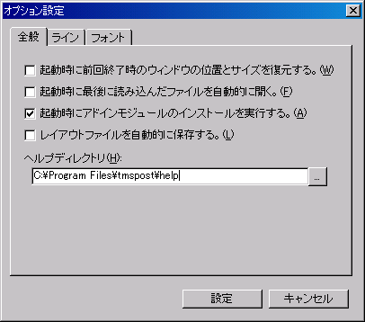

Tms Postインストール後に行う作業を以下に示します。
<マニュアルの設定>Tms Postの[ヘルプ]メニューの[目次]、[キーワード]、[検索]を利用するためには、Tms Postのマニュアルをハードディスクにコピーする必要があります。以下にマニュアルの設定方法の手順を示します。
- Tms PostのマニュアルをProject TMS Groupのホームページからダウンロードします。（本マニュアルです。オンライで閲覧されている方はダウンロードして下さい。）
- ダウンロードした自己解凍ファイルを解凍すると、helpフォルダが完成します。このフォルダにはHTML文書で作成されたマニュアルが格納されています。
- Tms Postの[ツール]−[オプション]メニューを選択すると下画面が表示されます。「ヘルプディレクトリ」に先ほど解凍したhelpフォルダを設定します。
- 以上の操作でTms Postの[ヘルプ]メニューの[目次]、[キーワード]、[検索]を使用することができます。
